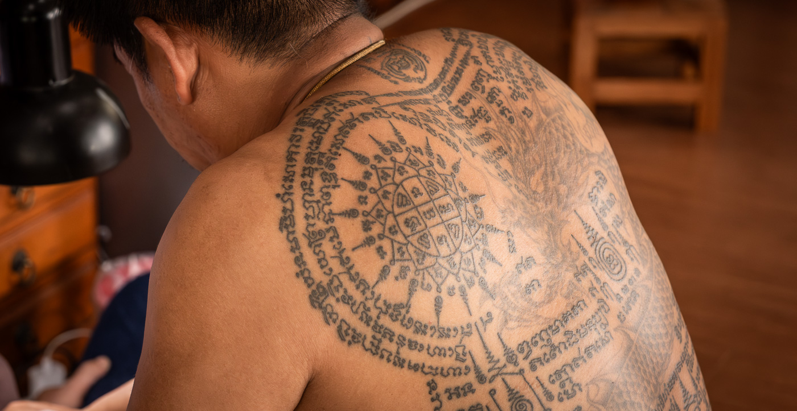
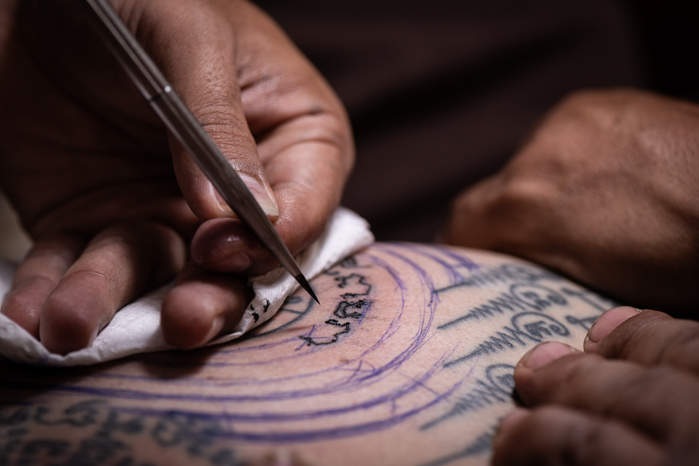
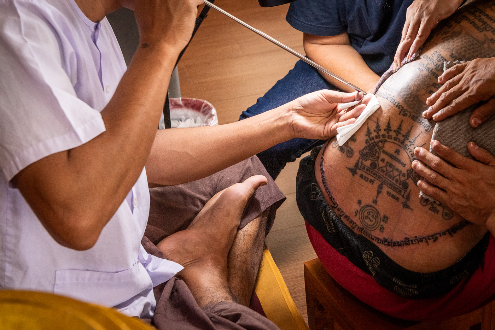

Sak Yant tattoos are traditional blessings inscribed into the skin by masters called Ajarns. They are designed to bring specific things into your life: protection, money, luck, personal magnetism, success in business.
These are magic spells cast into skin.
Many visitors to Bangkok who want one end up at commercial shops. These are places I can take you to. Ajarns I have trusted with my own skin and fortune.

My name is Tong. I was born in Bangkok, moved to the United States as a child in 1984, and returned in 2015. I came to Sak Yant the way most people do, wanting a tattoo, and kept going back. Before I found depth in the spiritual side of it, I was using my eye as a former corporate art director to find the most aesthetically skilled Ajarns I could afford. Several tattoos later, I realized I had access to something worth sharing. I am not a tattooist and I do not give tattoos myself. I am a native English speaker based in Bangkok. Tell me what you are looking for and when you will be in Bangkok, and I will arrange it.
Sak Yant is a traditional Southeast Asian practice rooted in sacred geometry, ancient script, and Buddhist and animist belief. The tradition is still active and still practiced the same way.

Most Westerners assume these are Buddhist tattoos. Some Thai people would say the same, but a lot of them know better because a lot of them are serious Buddhists. Buddhism teaches you to let go of desire. These tattoos exist specifically to get you the things you desire: money, protection, love, power. The people getting tattooed are not losing any sleep over that contradiction. That is Thailand.
The concern comes up often: is it appropriate for a Western visitor to receive a Sak Yant tattoo? It deserves a direct answer.
Sak Yant is not a tribal or indigenous tattoo tradition. The yantra designs come from India and were absorbed into Buddhist and animist practice as they moved east. It has been practiced across Thailand, Cambodia, Laos, and Myanmar for centuries. The argument that it belongs exclusively to one people does not hold up to the tradition's actual history.
The pushback Western visitors encounter almost never comes from Thai practitioners. It comes from outside the tradition entirely, from people with no stake in it who have appointed themselves its guardians. The Ajarns I work with run businesses. Access to their work is how they sustain their practice and pass the tradition forward. When someone declines to participate out of guilt, the person absorbing the cost is Thai. The discomfort stays with the visitor. The lost income stays with the Ajarn.
You do not need to be Buddhist to receive a Sak Yant. You need to show up with basic respect for where you are and what is happening. That is the whole thing.


Message me on any of the platforms below. Tell me when you will be in Bangkok and what you are looking for. I will take it from there.